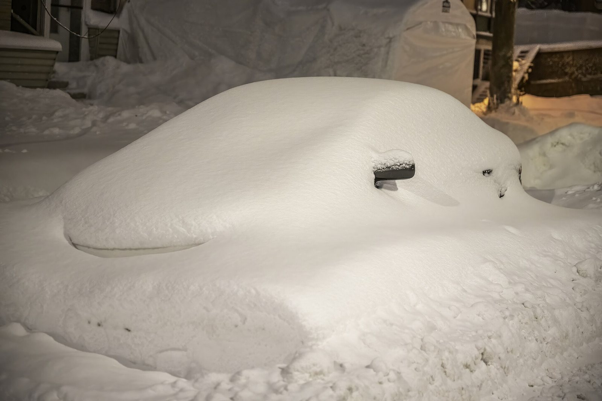

Уход за авто зимой: минимум действий, максимум эффекта

Зима убивает машину незаметно: соль, перепады и влага. Несколько простых привычек продлевают кузову и ходовой жизнь на годы.
Кузов и соль
- Регулярно мойте днище — там копится соль, которая ест металл.
- Наносите воск или жидкое стекло осенью — защита на сезон.
- Сколы закрашивайте сразу, пока не пошла ржавчина.
Аккумулятор и запуск
- Перед холодами проверьте заряд и возраст АКБ (5+ лет — кандидат на замену).
- Не включайте печку и свет до запуска двигателя.
Жидкости и резина
- Омывайку меняйте на «зимнюю» ДО заморозков — замёрзший бачок рвёт.
- Давление в шинах проверяйте по холоду, зимой оно падает.
Вывод
Три главные привычки: мыть днище от соли, следить за АКБ и заранее заливать зимнюю омывайку. Это дешевле любого ремонта.
Если машина ночует на улице — заведите и прогрейте хотя бы раз в 2–3 дня, чтобы АКБ не разрядился в ноль.
Проверьте актуальные цены
Ссылки на маркетплейсы и сервисы ведут на проверенные предложения, для вас цена не меняется.
Найти на Маркете →